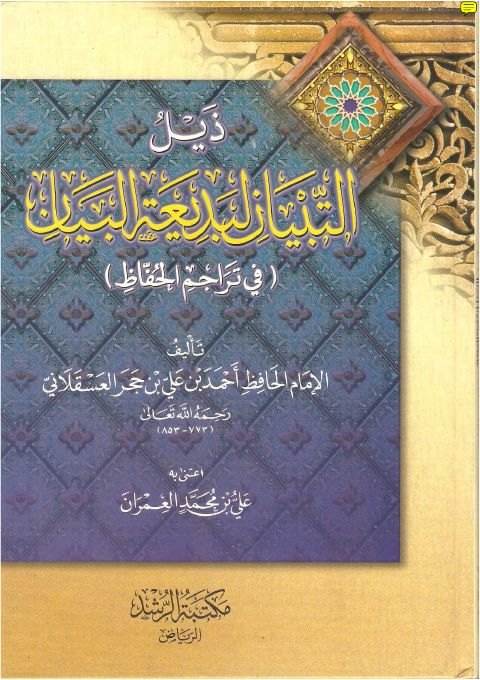
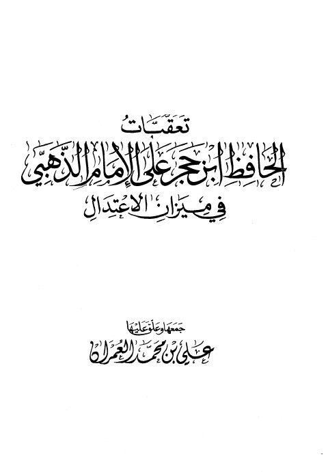

ذيل التبيان لبديعة البيان ذيل التبيان لبديعة البيان أحمد بن علي بن حجر العسقلاني
تعقبات الحافظ ابن حجر على الإمام الذهبي في ميزان الاعتدال تعقبات الحافظ ابن حجر على الإمام الذهبي في ميزان الاعتدال أحمد بن علي بن حجر العسقلاني رياض الصالحين من كلام رسول الله ﷺ سيد العارفين رياض الصالحين من كلام رسول الله ﷺ سيد العارفين يحيى بن شرف النووي